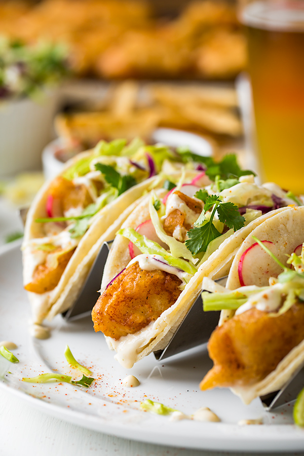
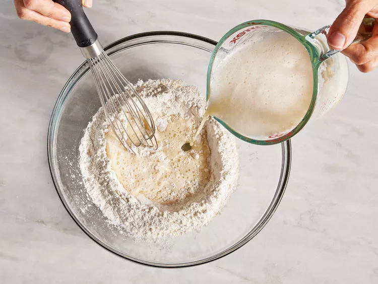
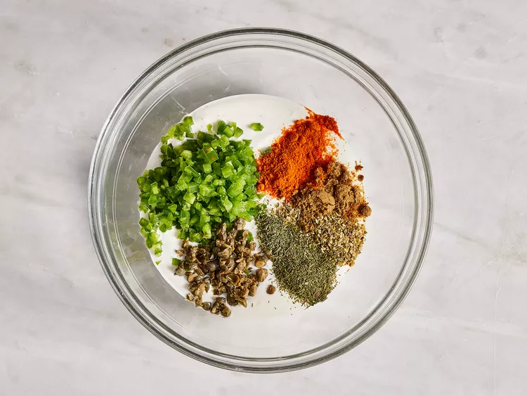
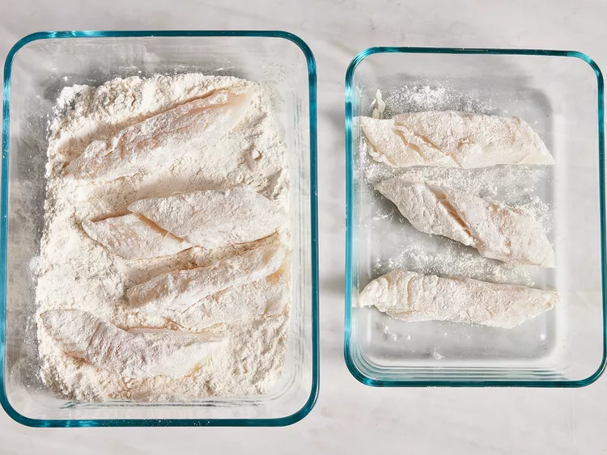
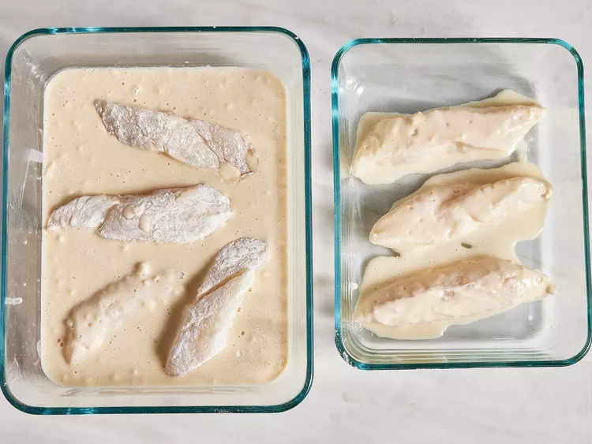
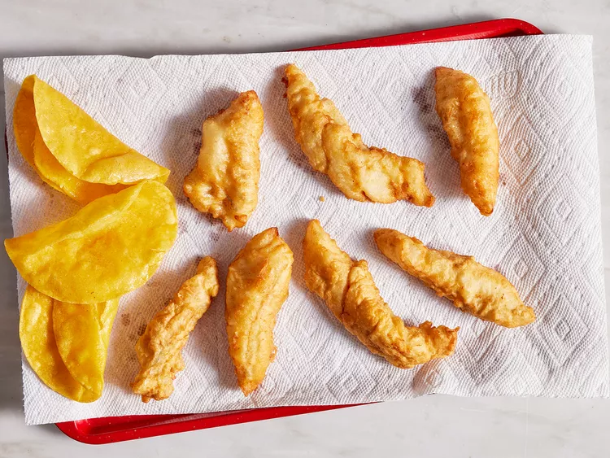
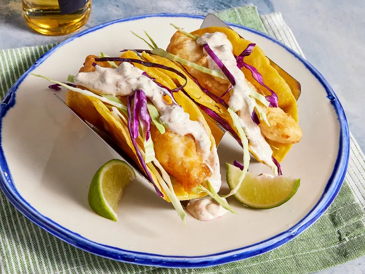

Fish Tacos

Dish Description:
These crispy fish tacos with shredded cabbage and a spicy homemade white sauce are just delicious!
Serve with homemade pico de gallo and lime wedges to squeeze on top.
Prep Time: 40 mins
Cook Time: 20 mins
Total Time: 1 hr
Servings: 8
Ingredients:
-
Beer Batter:
- 1 cup all-purpose flour
- 2 tablespoons cornstarch
- 1 teaspoon baking powder
- ½ teaspoon salt
- 1 cup beer
- 1 egg
-
White Sauce:
- ½ cup plain yogurt
- ½ cup mayonnaise
- 1 lime, juiced
- 1 jalapeno pepper, minced
- 1 teaspoon minced capers
- 1 teaspoon ground cayenne pepper
- ½ teaspoon dried oregano
- ½ teaspoon ground cumin
- ½ teaspoon dried dill weed
-
Fish Tacos:
- 1 quart oil for frying
- 1 pound cod fillets, cut into 2 to 3 ounce portions
- 2 tablespoons all-purpose flour, or more as needed
- 1 (12 ounce) package corn tortillas
- ½ medium head cabbage, finely shredded
Directions:
- Step 1
- Make beer batter: Combine flour, cornstarch, baking powder, and salt in a large bowl.
- Blend beer and egg in a separate bowl, then quickly stir into flour mixture until combined with a few lumps remaining.
- 
- Step 2
- Make white sauce: Mix together yogurt and mayonnaise in a medium bowl.
- Gradually stir in fresh lime juice until consistency is slightly runny.
- Season with jalapeño, capers, cayenne, oregano, cumin, and dill.
- 
- Step 3
- Start fish tacos: Heat oil in a deep-fryer to 375 degrees F (190 degrees C).
- Step 4
- Dust fish pieces lightly with flour. Set aside.
- 
- Step 5
- Dip floured fish pieces into beer batter. Set aside.
- 
- Step 6
- Fry in hot oil until crisp and golden brown. Drain on paper towels.
- Lightly fry tortillas in hot oil until just crisped, but not too crisp.
- Drain on paper towels.
- 
- Step 7
- Place fried fish in tortillas; top with shredded cabbage and white sauce.
- 